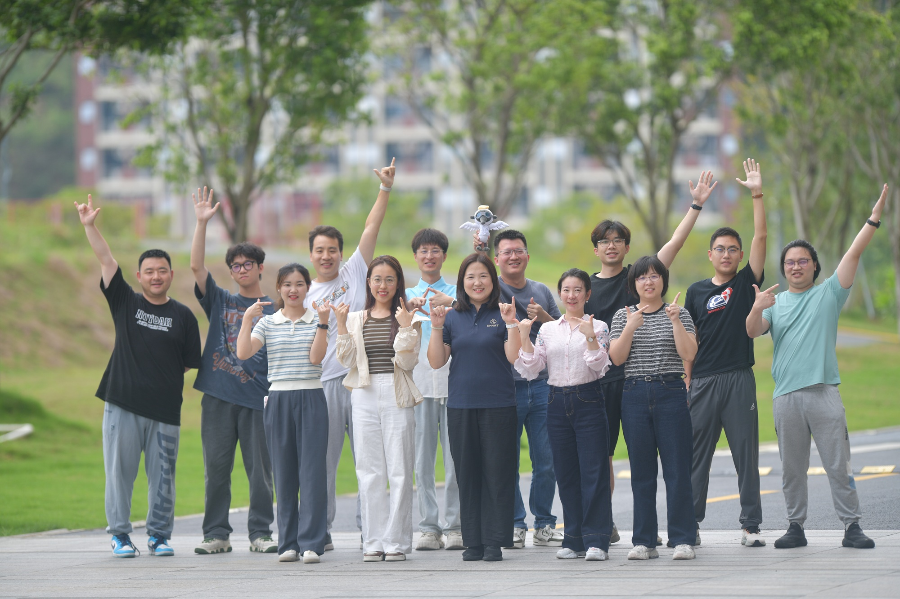

We are Pan lab
We are Pan lab from IBABI (Institute of Bio-Architecture and Bio-Interaction of
SMART),
focusing on single particle Cryo-EM.

About Our Research
Our lab specializes in single-particle Cryo-EM to determine high-resolution structures of membrane proteins, unraveling their working mechanisms and drug action principles. We combine structural biology with biochemistry, physiology, and medicinal chemistry to tackle key questions in disease biology.
Research Directions:
- Voltage-gated ion channels (NaV, CaV) — gating modulation, toxin recognition, drug binding
- Urate transporter GLUT9 — substrate transport mechanism, gout therapeutic target
- Metabolic disease membrane proteins — structure-based drug discovery
- Tumor-immune related proteins — structural basis for immunotherapy
Key Techniques: Cryo-EM structure determination · Protein engineering · Electrophysiology · Ligand screening
Representative Publications
Structural basis for urate recognition and apigenin inhibition of human GLUT9
Nature Communications
·
12 Jun 2024
·
doi:10.1038/s41467-024-49420-9
Structural biology and molecular pharmacology of voltage-gated ion channels
Nature Reviews Molecular Cell Biology
·
05 Aug 2024
·
doi:10.1038/s41580-024-00763-7
Molecular basis for pore blockade of human Na+ channel Nav1.2 by the μ-conotoxin KIIIA
Science
·
22 Mar 2019
·
doi:10.1126/science.aaw2999
Structural basis for the modulation of voltage-gated sodium channels by animal toxins
Science
·
19 Oct 2018
·
doi:10.1126/science.aau2596
Highlights

Our Research
Our research

Our Team
Meet the team!